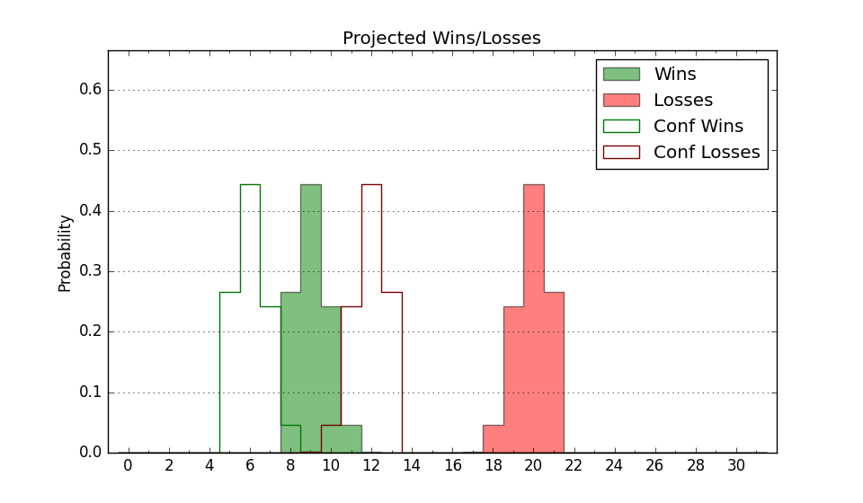

| Home | Game Probabilities | Conferences | Preseason Predictions | Odds Charts | NCAA Tournament |
| City: | Portland, Oregon | |
| Conference: | West Coast (8th)
| |
| Record: | 5-9 (Conf) 8-17 (Overall) | |
| Ratings: | Comp.: -13.1 (299th) Net: -13.2 (299th) Off: 101.1 (256th) Def: 114.3 (314th) SoR: 0.0 (122nd) |
| Remaining | ||||||
|---|---|---|---|---|---|---|
| Date | Opponent | Win Prob | Pred. | |||
| 2/19 | @ Saint Mary's (21) | 1.1% | L 54-84 | |||
| 2/22 | @ Pacific (263) | 27.1% | L 70-77 | |||
| 2/27 | Pepperdine (224) | 45.4% | L 77-78 | |||
| 3/1 | @ San Diego (292) | 33.2% | L 74-80 | |||
| Previous | Game Score | |||||
| Date | Opponent | Win Prob | Result | Off | Def | Net |
| 11/9 | UC Santa Barbara (121) | 24.7% | L 53-94 | -32.8 | -17.7 | -50.5 |
| 11/12 | @Oregon (35) | 1.8% | L 70-80 | 0.1 | 28.9 | 29.0 |
| 11/16 | @Long Beach St. (301) | 35.5% | W 63-61 | -4.7 | 10.5 | 5.8 |
| 11/21 | (N) South Florida (191) | 26.1% | L 68-74 | -7.5 | 8.2 | 0.6 |
| 11/22 | (N) Ohio (180) | 23.7% | L 73-85 | -12.3 | 8.6 | -3.7 |
| 11/24 | (N) Princeton (165) | 22.4% | L 67-94 | -9.9 | -7.5 | -17.4 |
| 12/1 | Denver (305) | 66.1% | W 101-90 | 3.3 | 1.2 | 4.5 |
| 12/6 | @Kent St. (150) | 11.7% | L 57-76 | -0.0 | 0.8 | 0.8 |
| 12/10 | UMKC (227) | 46.3% | L 64-69 | -11.1 | 1.4 | -9.7 |
| 12/18 | Cal St. Bakersfield (255) | 53.8% | L 64-81 | -7.5 | -20.1 | -27.6 |
| 12/21 | Lafayette (286) | 61.8% | W 74-64 | -0.3 | 11.9 | 11.7 |
| 12/28 | Washington St. (97) | 18.7% | L 73-89 | 0.1 | -4.4 | -4.3 |
| 12/30 | @Oregon St. (76) | 4.2% | L 79-89 | 27.9 | -10.4 | 17.5 |
| 1/2 | @Gonzaga (10) | 0.8% | L 50-81 | -16.2 | 14.7 | -1.5 |
| 1/4 | Saint Mary's (21) | 3.7% | L 58-81 | -3.5 | -1.2 | -4.6 |
| 1/9 | @San Francisco (59) | 3.2% | L 72-81 | 19.3 | -0.8 | 18.5 |
| 1/16 | Pacific (263) | 55.9% | W 84-81 | 3.2 | -6.3 | -3.1 |
| 1/18 | @Washington St. (97) | 6.3% | L 70-92 | 0.1 | -3.3 | -3.2 |
| 1/23 | San Diego (292) | 62.8% | W 92-82 | 17.5 | -11.0 | 6.5 |
| 1/25 | Gonzaga (10) | 2.7% | L 62-105 | -2.5 | -23.5 | -26.0 |
| 1/30 | @Loyola Marymount (157) | 12.9% | L 63-88 | -6.7 | -15.1 | -21.9 |
| 2/1 | @Pepperdine (224) | 19.6% | W 84-64 | 24.1 | 21.7 | 45.8 |
| 2/6 | Santa Clara (54) | 8.5% | L 50-97 | -28.4 | -13.2 | -41.6 |
| 2/13 | Oregon St. (76) | 13.0% | W 84-72 | 29.1 | 15.0 | 44.1 |
| 2/15 | Loyola Marymount (157) | 33.5% | W 89-78 | 24.3 | 0.2 | 24.5 |
| Stats & Trends | |||||
|---|---|---|---|---|---|
| Current | Day | Week | Month | Season | |
| Composite | -13.1 | +0.0 | +2.8 | +0.2 | -7.7 |
| Comp Rank | 299 | +1 | +22 | +1 | -89 |
| Net Efficiency | -13.2 | +0.0 | +3.0 | +0.9 | -- |
| Net Rank | 299 | +2 | +22 | +10 | -- |
| Off Efficiency | 101.1 | -0.0 | +2.3 | +3.3 | -- |
| Off Rank | 256 | -1 | +36 | +44 | -- |
| Def Efficiency | 114.3 | +0.0 | +0.6 | -2.4 | -- |
| Def Rank | 314 | -1 | +13 | -24 | -- |
| SoS Rank | 109 | +1 | -8 | +7 | -- |
| Exp. Wins | 9.1 | +0.0 | +1.9 | +2.6 | -2.7 |
| Exp. Conf Wins | 6.1 | +0.0 | +1.9 | +2.6 | -0.2 |
| Conf Champ Prob | 0.0 | -- | -- | -- | -0.0 |

| Advanced Stats | ||
|---|---|---|
| Stat | Value | Rank |
| Off Eff FG % | 0.505 | 183 |
| Off Ast Ratio | 0.166 | 63 |
| Off ORB% | 0.233 | 311 |
| Off TO Rate | 0.169 | 317 |
| Off FT Ratio | 0.337 | 155 |
| Def Eff FG % | 0.534 | 266 |
| Def Ast Ratio | 0.168 | 324 |
| Def ORB% | 0.286 | 184 |
| Def TO Rate | 0.109 | 357 |
| Def FT Ratio | 0.233 | 7 |